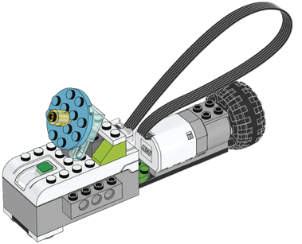
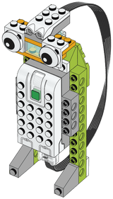

Este proyecto consta de 4 retos donde se irán viendo los diferentes componentes de la caja de WeDo 2.0.
Nos apoyaremos en el hecho de que es muy probable que el alumno tenga algún producto de LEGO® en casa y ya
esté familiarizado con el montaje.
Este primer proyecto está orientado a los alumnos que no han tenido un contacto previo, ya sea con los productos WeDo 2.0. o con la robótica en general.
• Encender y apagar la luz del HUB.
• Encender una secuencia de luces (por ejemplo, verde, amarillo y rojo).
• Hacer un sonido al final de la secuencia de luces.

• Hacer girar el molino durante un determinado tiempo y a continuación, hacerlo girar el mismo tiempo en dirección contraria.
• Hacer un sonido antes de cambiar de dirección.
• Hacer girar el satélite una vuelta entera.
• El ejercicio anterior ademas de hacer una vuelta de regreso.
• Añadirle sonidos y colores en cada acción.

• Programar el sensor para que emita un sonido cuando detecte una presencia.
• Acoplar un ventilador (ver segundo proyecto) para que se encienda cuando el sensor detecte una presencia.
